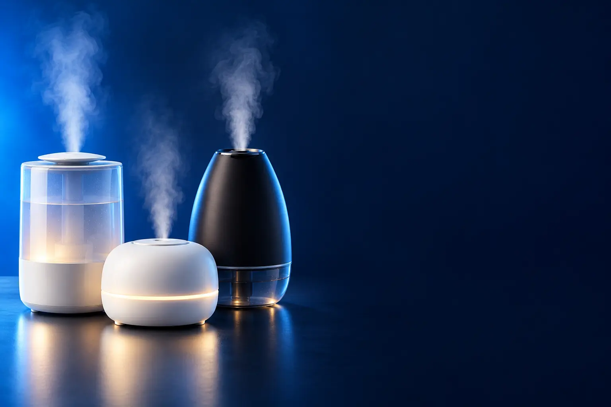

PARA O QUARTO
Melhor umidificador de ar custo-benefício para o quarto
Silencioso e com autonomia para a noite toda.

Melhor custo-benefício em umidificadorG-Tech Allergy Free HM 3 L
CURADORIA TECHAPROVADO · 2026
Umidificador alivia nariz, garganta e pele no tempo seco. Separamos 6 modelos em 2 perfis e dizemos para quem cada um vale a pena.

NOSSA LEITURA
Para a noite no quarto, 3 a 4 litros bastam. Para a sala o dia todo, prefira 5 litros ou mais. Use água filtrada e limpe o reservatório toda semana.
COMECE POR AQUI
PARA O QUARTO
Silencioso e com autonomia para a noite toda.
AMBIENTES MAIORES
Reservatório grande para sala ou quarto amplo, e até Wi-Fi.

A FICHA, TRADUZIDA
01 - RESERVATÓRIO
O reservatório define quanto tempo o umidificador funciona sem reabastecer. Em geral, cada litro rende de 3 a 5 horas na intensidade média.
Quarto: 2,5 a 4 litros para a noite toda. Sala e ambientes grandes: 5 litros ou mais.
O desligamento automático evita que o aparelho funcione sem água.
02 - NÉVOA FRIA
Os umidificadores ultrassônicos transformam a água em névoa fria por vibração, sem aquecer. São silenciosos e gastam pouca energia.
Névoa fria é mais segura perto de crianças, porque não há água quente.
Água da torneira pode deixar pó branco nos móveis: use água filtrada ou modelos com filtro.
03 - UMIDADE IDEAL
A umidade ideal fica entre 40% e 60%. Abaixo de 30%, o ar seco irrita olhos, nariz e garganta.
Umidade acima de 60% favorece mofo e ácaros. Não deixe o umidificador ligado o tempo todo em dias úmidos.
Um higrômetro barato mostra a umidade do cômodo.
04 - LIMPEZA
Troque a água todo dia e limpe o reservatório pelo menos uma vez por semana, com água e sabão neutro ou vinagre.
Água parada acumula bactérias e fungos, que o umidificador espalha no ar.
Seque bem as peças antes de guardar o aparelho fora da estação seca.
A CURADORIA EM DETALHE
6 modelos da pesquisa
PERFIL · 3 MODELOS, DA ENTRADA AO TOP DE LINHA
No quarto, o umidificador precisa ser silencioso e durar a noite inteira. De 2,5 a 4 litros bastam para 8 a 12 horas de névoa fria.
QUARTO · CUSTO-BENEFÍCIO 1 de 3
Melhor custo-benefício em umidificador
3 L · ultrassônico · mais de 10 h · bivolt
Ver preço na AmazonPOR DENTRO DA ESCOLHA
Umidificador ultrassônico de 3 litros com névoa fina, desligamento automático quando a água acaba, funcionamento super silencioso, baixo consumo, mais de 10 horas de autonomia e bivolt.
Marca de saúde conhecida, nota 4,7 e vendido pela Amazon.
| Reservatório | 3 L |
|---|---|
| Autonomia | Mais de 10 h |
| Voltagem | Bivolt |
Fonte: ficha e descrição do anúncio, conferidas em 02/11/2026. Dados informados pelo fabricante. Nota e número de avaliações são de compradores, não teste do TechAprovado.

QUARTO · ALTERNATIVA 2 de 3
Outro caminho: com luminária e aromas
Luminária · difusor de aromas · até 12 h · bivolt
Ver preço na AmazonPOR DENTRO DA ESCOLHA
Umidificador ultrassônico de névoa fria com 4 litros, até 12 horas de autonomia, luminária, compartimento para aromas e funcionamento silencioso.
O umidificador mais avaliado da loja: mais de 20 mil avaliações.
| Reservatório | 4 L |
|---|---|
| Autonomia | Até 12 h |
| Extras | Luminária e aromas |
Fonte: ficha e descrição do anúncio, conferidas em 02/11/2026. Dados informados pelo fabricante. Nota e número de avaliações são de compradores, não teste do TechAprovado.

QUARTO · TOP DE LINHA 3 de 3
Top de linha para o quarto
Filtro de impurezas · 20 h · bivolt
Ver preço na AmazonPOR DENTRO DA ESCOLHA
Umidificador portátil de 2,5 litros com filtro que elimina 99,9% das impurezas da água, recipiente para aromas e autonomia média de 20 horas.
O filtro reduz o pó branco que a água da torneira deixa nos móveis.
| Reservatório | 2,5 L |
|---|---|
| Autonomia | Até 20 h |
| Filtro | Sim |
Fonte: ficha e descrição do anúncio, conferidas em 02/11/2026. Dados informados pelo fabricante. Nota e número de avaliações são de compradores, não teste do TechAprovado.
PERFIL · 3 MODELOS, DA ENTRADA AO TOP DE LINHA
Para sala ou ambientes amplos, um reservatório de 4,8 a 6 litros mantém a umidade por mais tempo sem reabastecer. Os mais completos têm app e Alexa.
AMBIENTES MAIORES · CUSTO-BENEFÍCIO 1 de 3
Melhor custo-benefício para ambientes maiores
4,8 L · bivolt
Ver preço na AmazonPOR DENTRO DA ESCOLHA
Umidificador de 4,8 litros, bivolt, com reservatório grande para mais horas sem reabastecer.
O maior reservatório pelo menor preço, vendido pela Amazon.
| Reservatório | 4,8 L |
|---|---|
| Voltagem | Bivolt |
Fonte: ficha e descrição do anúncio, conferidas em 02/11/2026. Dados informados pelo fabricante. Nota e número de avaliações são de compradores, não teste do TechAprovado.

AMBIENTES MAIORES · INTERMEDIÁRIO 2 de 3
6 L · 35 W · bivolt
Ver preço na AmazonPOR DENTRO DA ESCOLHA
Umidificador de 6 litros e 35 W, bivolt, para ambientes amplos. O fabricante recomenda posicionar a pelo menos 1 m de altura e longe de móveis.
O reservatório de 6 litros mantém a sala úmida por mais tempo.
| Reservatório | 6 L |
|---|---|
| Potência | 35 W |
| Voltagem | Bivolt |
Fonte: ficha e descrição do anúncio, conferidas em 02/11/2026. Dados informados pelo fabricante. Nota e número de avaliações são de compradores, não teste do TechAprovado.

AMBIENTES MAIORES · TOP DE LINHA 3 de 3
Top de linha em umidificador
App · Alexa e Google · luz noturna · bivolt
Ver preço na AmazonPOR DENTRO DA ESCOLHA
Umidificador de 6 litros com Wi-Fi: controle pelo app ou por voz (Alexa e Google), integração com o ar-condicionado Midea AI Ecomaster, difusor de aromas, luz noturna em três cores e desligamento automático.
O único conectado da lista: dá para ligar antes de chegar em casa.
| Reservatório | 6 L |
|---|---|
| Conectividade | Wi-Fi, Alexa, Google |
| Voltagem | Bivolt |
Fonte: ficha e descrição do anúncio, conferidas em 02/11/2026. Dados informados pelo fabricante. Nota e número de avaliações são de compradores, não teste do TechAprovado.
Nenhum modelo encontrado. Tente outro termo ou volte para Todos.
LADO A LADO
| Modelo | Perfil | Posição | Reservatório | Destaque | Nota (avaliações) |
|---|---|---|---|---|---|
| G-Tech Allergy Free HM 3 L | Quarto | Custo-benefício | 3 L | 3 L · ultrassônico · mais de 10 h · bivolt | 4,7 (3,4 mil) |
| WAP Air Flow 4 L | Quarto | Alternativa | 4 L | Luminária · difusor de aromas · até 12 h · bivolt | 4,6 (20,3 mil) |
| BLACK+DECKER AIR1000 2,5 L | Quarto | Top de linha | 2,5 L | Filtro de impurezas · 20 h · bivolt | 4,6 (13,2 mil) |
| Britânia BUD04B 4,8 L | Ambientes maiores | Custo-benefício | 4,8 L | 4,8 L · bivolt | 4,6 (1,1 mil) |
| Mondial Comfort Air 6 (UA-07) | Ambientes maiores | Intermediário | 6 L | 6 L · 35 W · bivolt | 4,5 (1,8 mil) |
| Midea Master Connect 6 L (Wi-Fi) | Ambientes maiores | Top de linha | 6 L | App · Alexa e Google · luz noturna · bivolt | 4,7 (116) |
CONSIDERAÇÕES FINAIS
Umidificadores de marcas como Levoit e Dreo ficaram de fora por serem importados pela Amazon Global.
O G-Tech Allergy Free 3 L para o quarto e o Britânia 4,8 L para ambientes maiores.
Sim, com desligamento automático e se a umidade não passar de 60%.
3 a 4 litros para o quarto; 5 ou mais para a sala.
Pode, mas a filtrada evita pó branco e acúmulo de minerais.
Porque ele muda várias vezes por dia. O botão leva ao valor atualizado na loja.
TRANSPARÊNCIA EDITORIAL
Separamos os umidificadores pelo tamanho do ambiente e montamos uma escada de preço em cada perfil. Cada modelo precisa responder com clareza "para quem ele é o certo".
Em cada perfil há modelos em faixas de preço diferentes, e cada degrau precisa entregar algo que o anterior não entrega. Dois modelos com a mesma proposta não entram juntos.
Ficha, nota e número de avaliações foram conferidos nos anúncios das lojas em 02/11/2026. As avaliações são de compradores, não teste nosso.
Os links de compra desta página são de afiliado: se você comprar por eles, o TechAprovado pode ganhar uma comissão, sem custo adicional para você. Isso não muda a ordem nem a escolha dos produtos.
📲 GUIAS E DICAS NO SEU FEED
Dicas práticas antes de comprar, em carrosséis e vídeos curtos, sempre com link para o guia completo.